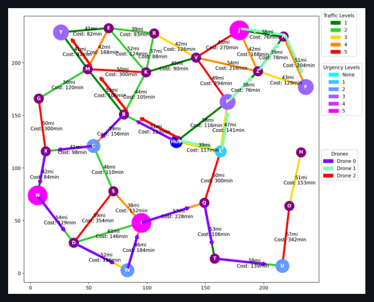
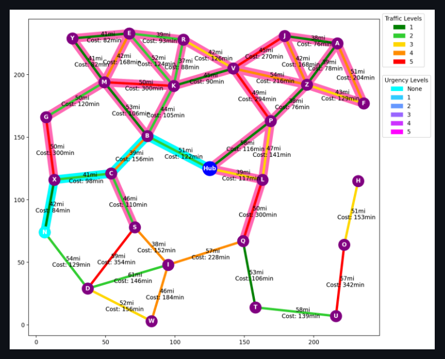
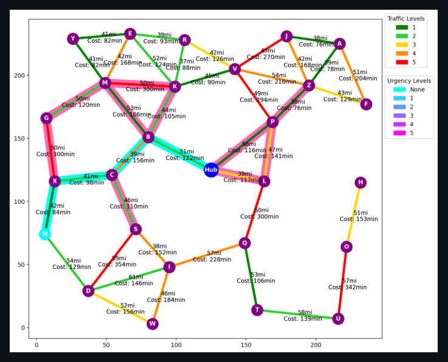
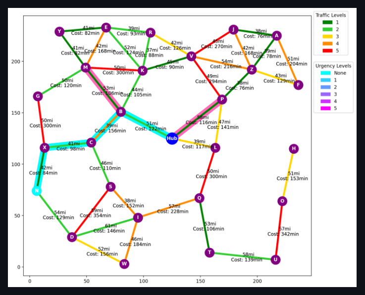
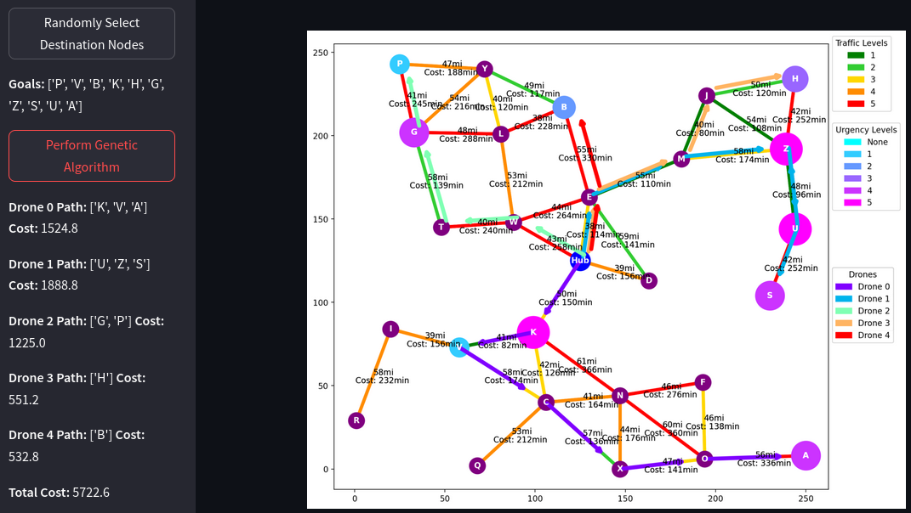
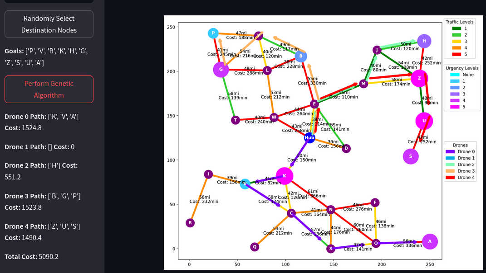

Graph Tab:
- Use the sliders to configure graph dimensions.
- Click the
Reset Graphbutton to generate a new graph.
A* Tab:
- Select a destination node and heuristic type.
- Click
Perform A* Searchto run A* algorithm. - Path is displayed in light blue with all explored paths colored in pink.
Genetic Algorithm Tab:
- Select number of drones available for deliveries, crossover type, and mutation rate.
- Click
Randomly Select Destination Nodesto generate random delivery goals with varying delivery urgencies. - Click
Perform Genetic Algorithmto find the optimal paths and order of deliveries for each drone.
🚧 Allow a few seconds for UI to update after making selections or clicking buttons. DOES NOT RUN ON FIREFOX BROWSERS
🚀 Play Demo
View source code for details.
In a futuristic city, autonomous delivery drones are tasked with efficiently delivering packages from a central hub to various destinations. The city is represented as a graph, with nodes representing locations and edges representing possible paths between locations. Each node has associated costs, such as distance, traffic conditions, or delivery urgency.
1 Graph Generation
1.1 Step-by-Step Description
- Graph Initialization: A Streamlit GUI is implemented to allow users to interactively specify the size and number of nodes for the graph. This setup enables users to customize the complexity and scale of the synthetic graph according to their specific testing needs.
- Node Creation: Nodes are dynamically generated based on the user-specified number. Each node represents a potential delivery location in a hypothetical urban environment. Each node is initialized with an initial delivery urgency of 0. However, when random goals are selected in the genetic algortithm (GA) tab of the GUI the nodes that are selected are randomly assigned delivery urgency values from 1 to 5.
- Node Interconnection: Nodes are interconnected based on their proximity to simulate realistic urban layouts. This proximity-based linking ensures that the graph realistically mimics city road networks where closer locations are more likely to be directly connected.
- Edge Assignment: Each edge between nodes is assigned a randomly generated traffic volume, on a scale from 1 to 5, where 1 represents minimal traffic and 5 represents heavy traffic. This randomness introduces variability in the dataset, simulating real-world unpredictability in urban traffic conditions.
- Cost Metric Calculation: The cost to traverse each path (edge) is calculated based on a base drone speed, which is adjusted according to the traffic level on that path. Higher traffic conditions result in slower speeds, increasing the traversal time and thus the cost.
- Data Visualization: The GUI visually represents the graph with color-coded edges according to traffic density. This visual representation aids in quick analysis and understanding of traffic conditions across different paths.
1.2 Justifications
- Cost Metric Based on Real-World Conditions: Using adjusted drone speeds to calculate path costs introduces a practical element to the model, where the quickest path might not always be the shortest distance due to varying traffic conditions. This approach teaches the model to optimize time efficiency, which is more aligned with real-world objectives in drone delivery systems.
- Visualization for Clarity and Insight: Implementing color-coded visualizations of traffic conditions not only makes the data more accessible and understandable for users but also aids in quicker decision-making and algorithm adjustments based on visible traffic patterns.
2 A* Algorithm Implementation
2.1 Step-by-Step Description
Definition of State Space, Initial State, and Goal State:
- State Space: The state space encompasses all possible positions of the drone within the city, represented by the nodes in the synthetic graph. Each node corresponds to a potential drone location, thus defining the complete set of states that the drone can occupy.
- Initial State: The initial state is defined as the drone’s starting position on the graph, set at a predefined node representing the central hub.
- Goal State: The goal state is the delivery destination, which is another node on the graph where the package needs to be delivered. This is selected in the GUI by the user on the A* tab of the toolbar.
Heuristic Function: The heuristic function designed for the A* algorithm incorporates the following factors to estimate the remaining cost from the current state (node) to the goal state:
- Euclidean Distance: Computes the straight-line distance to the goal, providing a basic estimate of proximity.
- Traffic Conditions: Adjusts the distance estimate based on the traffic level associated with each path, acknowledging that higher traffic may increase travel time.
Algorithm Implementation: The A* algorithm is implemented to dynamically choose the path that minimizes the combined cost calculated by the heuristic function. It starts at the initial state and explores paths through the graph, continually updating the path costs based on the heuristic function until it reaches the goal state. Different heuristic options (Listing 1) are provided to the user via a GUI:
- No Heuristic: Treats the search as a breadth-first search, exploring all possible paths equally without prioritization.
- Euclidean Distance: Prioritizes paths that reduce the physical distance to the goal.
- Euclidean Distance with Traffic Information: Default setting, prioritizes paths by combining distance and traffic data, effectively reducing unnecessary path explorations and enhancing computational efficiency (Figures 2-4).
Listing 1. Heuristic options.
a_star.py
# Method to calculate the heuristic value of a node
def heuristic(self, node, goal_node, traffic_level):
# No heuristic
def zero(node, goal_node, traffic_level):
return 0
# Euclidean distance heuristic
def euclidean(node, goal_node, traffic_level):
# Calculate euclidean distance from node to goal node
return gp.euc_dist(node.pos, goal_node.pos)
# Euclidean distance with traffic awareness heuristic
def traffic_aware(node, goal_node, traffic_level):
# Calculate euclidean distance from node to goal node
distance = gp.euc_dist(node.pos, goal_node.pos)
# Calculate traffic factor based on traffic level,
# will be 50% higher for each unit increase in the traffic level
traffic_factor = 1 + traffic_level * 0.5
# Return euclidean distance multiplied by traffic factor
return distance * traffic_factor2.1.1 Justifications
- Heuristic Options: Offering different heuristic settings allows users to customize the algorithm’s behavior according to specific requirements or conditions, thereby enhancing the utility and adaptability of the algorithm across various operational contexts.
- Composite Heuristic Function: The design of the heuristic function is crucial for balancing different real-world considerations such as distance and traffic. By integrating these factors, the heuristic function provides a realistic and practical approach to estimating travel costs, leading to more efficient and applicable route optimizations in urban drone delivery scenarios (Figure 1 (c)).
- Visualization and Computational Efficiency: Visualizing the paths explored, highlighted in pink, and the optimal path, highlighted in cyan, not only provides transparency into the algorithm’s functioning but also demonstrates its efficiency in real-time, reinforcing the effectiveness of the chosen heuristic in reducing computational load (Figure 1).



3 Genetic Algorithm for Path Optimization
3.1 User Interaction and Setup
The genetic algorithm (GA) implemented in this project offers a highly interactive and user-friendly environment for experimenting with drone delivery strategies. Users initiate the simulation by clicking a button that randomly selects ten delivery goals, each assigned a random urgency value to simulate time-sensitive delivery requirements. These urgencies are visualized on the graph and detailed in the accompanying legend, clearly presenting the delivery priorities to the user (Figure 2). Users can configure the number of drones, ranging from 1 to 10, to distribute the delivery tasks, thereby optimizing the delivery schedule based on available resources and the urgency of deliveries.

3.2 Representation of Solutions (Chromosomes)
3.2.1 Step-by-Step Description
- Chromosome Structure: Each chromosome in the GA represents a potential solution, where a solution is the sequence of nodes (goals) that each in the individual drone visits. This sequence directly influences the route that each drone will take through the city, with each gene in the chromosome corresponding to a delivery point.
- Encoding Details: The paths that each drone will follow are encoded within these chromosomes, with the specific order of nodes dictating the sequence of deliveries. The chromosome structure allows for easy manipulation during the genetic operations, which is crucial for effectively exploring the solution space.
3.2.2 Justifications
Chromosome representation: This representation is chosen for its straightforward relation to the problem’s nature, which is essentially a routing problem. By representing routes as sequences of nodes, the genetic algorithm can efficiently apply crossover and mutation operations to explore new route configurations and optimize delivery sequences. This setup mirrors real-world routing optimizations and is integral to achieving practical, implementable solutions.
3.3 Crossover and Mutation Operations
3.3.1 Step-by-Step Description
- Crossover Operations: The genetic algorithm offers three crossover methods* allowing users to select the strategy that best suits their operational goals:
- Uniform Crossover: Each gene (node) from parent chromosomes has a 50% chance of being transferred to the offspring. This method ensures diversity in the gene pool by randomly mixing genes from two parent solutions.
- One-Point Crossover: A random point is selected in the parents’ sequence. For a single drone configuration, the crossover point is at the goal level, splitting the sequence of goals. For multiple drones, the split occurs at the drone level, where one part of the drone fleet and their respective goals come from one parent, and the remainder from the other parent.
- Heuristic Crossover: Zhang, P. et al. (2022) suggests a novel approach to performing the crossover to assist a GA in finding the global optimal solution in the travelling salesmen problem. Following similar principles (Zhang, P. et al., 2022, pp. 4-5), we utilize a custom heuristic to assess the suitability of placing a selected goal next to another in the offspring. The heuristic evaluates compatibility based on the cost dictionary, favoring high-quality matches that are more likely to result in efficient routes (Listing 2).
See uniform_crossover(), one_point_crossover(), and heuristic_crossover() methods in gen_alg.py for details.
Listing 2. Method for calculating goal quality.
gen_alg.py
# Method to calculate the quality of a goal based on the heuristic
def is_high_quality(self, goal1, goal2):
# Get the cost of traveling from goal1 to goal2
cost = self.costs[goal1][goal2][1]
# Get the minimum and maximum cost of traveling to goal1 from any other goal
min_cost, max_cost = self.goal_cost_range[goal1]
# Calculate the quality of the goal based on the heuristic
# The closer the cost is to the minimum cost the higher the quality of the goal
where = 1 - ((cost - min_cost) / (max_cost - min_cost))
# Return the quality of the goal
return where- Mutation Process: The mutation process begins by checking if a mutation should occur, which is determined by a predetermined mutation rate set by the user. A drone is randomly selected from the fleet. The algorithm ensures that the selected drone has at least one goal. A specific goal is then chosen from the selected drone’s list of delivery locations, either by picking the only goal or randomly selecting one if multiple goals exist. This goal is removed from the chosen drone’s list of destinations. If there are drones with no assigned goals (empty drones), the removed goal is assigned to one of these drones, promoting distribution of delivery tasks. If all drones have assigned goals, the removed goal is added to a randomly selected drone’s list, increasing the diversity of route configurations explored by the algorithm (Listing 3).
Listing 3. Method for mutating individuals.
gen_alg.py
# Method to mutate individuals by moving goals from one drone to another
def mutate(self, individual):
# Percentage based on mutation rate given
if random.random() < self.mutation_rate:
# Move a goal from one drone to another
for _ in range(2):
# Select a random drone
drone = random.randint(0, len(individual)-1)
# Ensure that the selected drone has goals
while len(individual[drone].locations) == 0:
# Select a random drone
drone = random.randint(0, len(individual)-1)
# If the drone has only one goal
if len(individual[drone].locations) == 1:
# Select the only goal
goal = 0
# If the drone has more than one goal
else:
# Select a random goal
goal = random.randint(0, len(individual[drone].locations)-1)
# Remove the goal from the drone
location = individual[drone].locations.pop(goal)
# Select drones with no goals
empty_drones = [d for d in individual if len(d.locations) == 0]
# If there are drones with no goals
if empty_drones:
# Select a random drone with no goals
drone = random.choice(empty_drones)
# Add the goal to the drone
drone.locations.append(location)
# If there are no drones with no goals
else:
# Select a random drone to add the goal to
individual[random.randint(0, len(individual)-1)].locations.append(location)
# Return the mutated individual
return individual3.3.2 Justifications
- Crossover Methods: Each crossover method offers different advantages: uniform crossover introduces high variability, one-point preserves existing good sequences, and heuristic crossover refines solutions by incorporating domain-specific knowledge, increasing the likelihood of finding optimal routes. These methods are selected to balance exploration and exploitation in the genetic search process, optimizing the algorithm’s performance across diverse scenarios.
3.4 Fitness Function
3.4.1 Step-by-Step Description
- Integration with A* Algorithm: Before the genetic algorithm commences, the A* algorithm is employed to calculate the most efficient paths and distances between each goal and the central hub node. These calculations and optimal routes between the goal nodes are then saved in a cost dictionary to be used during the fitness evaluation (Listing 4).
Listing 4. Method for creating cost dictionary.
gen_alg.py
# Method to calculate the travel times and paths between all goal states
# and store them in a dictionary for future reference
def calculate_travel_times(self):
# Initialize dictionary to store all travel times and paths from the hub to each goal state
hub_to_goals = {}
# Iterate through all goal states
for goal in self.goal_states:
# Create A* agent for the initial state(Hub) and goal
astar_agent = ar.Agent('A*',
self.state_space,
self.initial_state,
goal,
'Euclidean + Traffic Aware')
# Perform A* search of the initial state(hub) and goal
path, travel_time = astar_agent.astar_search()
# Add the travel time to the hub_to_goal costs dictionary
hub_to_goals[goal] = (path, travel_time)
# Iterate through all other goal states
for other_goal in self.goal_states:
# If the goal is not the same as the other goal
if not goal == other_goal:
# Create A* agent for the goal and other goal
astar_agent = ar.Agent('A*',
self.state_space,
goal,
other_goal,
'Euclidean + Traffic Aware')
# Perform A* search of the goal and other goal
path, travel_time = astar_agent.astar_search()
# Add the travel time to the costs dictionary
self.costs[goal][other_goal] = (path, travel_time)
# Add the travel times from the hub to the goals to the costs dictionary
self.costs[self.initial_state] = hub_to_goals
# Calculate the range of costs for each goal state
for key in self.costs:
# Get the maximum and minimum travel times for each goal state
max_time = max(self.costs[key][key2][1] for key2 in self.costs[key])
min_time = min(self.costs[key][key2][1] for key2 in self.costs[key])
# Add the range of costs to the goal_cost_range dictionary
self.goal_cost_range[key] = (min_time, max_time)- Fitness Calculation: The fitness of each chromosome is calculated using the cost dictionary, which includes the optimal paths and distances pre-computed by the A* algorithm. Penalties increase for delays in addressing more urgent goals, accumulating until each goal is reached (Listing 5). These factors are computed using the pre-defined costs and urgency values associated with each node in the chromosome.
Listing 5. Method for calculating individual fitness
gen_alg.py
# Method to calculate the fitness of an individual
def fitness_function(self, individual):
# Initialize total time and total utility cost
total_time = 0
total_utility_cost = 0
# Loop through each drone in the individual
for drone in individual:
# Initialize drone path, cumulative time, and cumulative utility cost
drone.path = []
cumulative_time = 0
cumulative_utility_cost = 0
# If the drone has more than one goal
if len(drone.locations) > 1:
# Loop through each goal in the drone
for i in range(len(drone.locations)):
# Grab precalculated travel time and paths from costs dictionary from current state to goal
travel_time = self.costs[self.current_state][drone.locations[i]][1]
paths = self.costs[self.current_state][drone.locations[i]][0]
# For each path in the paths
for n in range(len(paths)):
# If the i which is the index of the goal is the last goal in the drone
if i == len(drone.locations)-1:
# Add the path to the drone
drone.path.append(paths[n])
# Else if the i which is the index of the goal is not the last goal in the drone
# and the n which is the index of the path is not the last path in the paths
elif n < len(paths)-1:
# Add the path to the drone
drone.path.append(paths[n])
# Add travel time to cumulative time
cumulative_time += travel_time
# Calculate utility cost for first goal based on travel time and delivery urgency
utility_cost = cumulative_time * drone.locations[i].delivery_urgency/10
# Add utility cost to cumulative utility cost
cumulative_utility_cost += utility_cost
# Update current state to goal
self.current_state = drone.locations[i]
# If the drone has only one goal
elif len(drone.locations) == 1:
# Perform A* search from current state to goal
travel_time = self.costs[self.current_state][drone.locations[0]][1]
# For each node in the path from current state to goal
for node in self.costs[self.current_state][drone.locations[0]][0]:
# Add the node to the drone path
drone.path.append(node)
# Add travel time to cumulative time
cumulative_time += travel_time
# Calculate utility cost for first goal based on travel time and delivery urgency
utility_cost = cumulative_time * drone.locations[0].delivery_urgency/10
# Add utility cost to cumulative utility cost
cumulative_utility_cost += utility_cost
# Update current state to goal
self.current_state = drone.locations[0]
# Store the total cost of the drone
drone.cost = cumulative_time + cumulative_utility_cost
# Add cumulative time and cumulative utility cost to total time and total utility cost
total_time += cumulative_time
# Update total utility cost
total_utility_cost += cumulative_utility_cost
# Update current state to initial state
self.current_state = self.initial_state
# Return the fitness of the individual
return total_time + total_utility_cost- Implementation: Fitness is inversely proportional to the total cost; thus, a lower cost results in higher fitness. This cost includes penalties for delayed deliveries, particularly for urgent goals, which accumulate until each delivery is completed.
3.4.2 Justifications
- Cost Dictionary: This pre-computation step is crucial because while the GA is adept at optimizing the order of goal visitations, it is not designed to determine the most efficient paths between these goals. The A* algorithm, known for its efficiency in finding the shortest paths in terms of time and space complexity, ensures that the paths used in the GA’s fitness evaluations are optimal. This separation of concerns allows the GA to focus solely on sequencing the deliveries, leveraging its strengths in evolving solutions over generations without the computational overhead of pathfinding (Listing 4).
- Utility Cost: The fitness function is designed to align closely with the operational goals of reducing delivery times and costs. By incorporating urgency into the fitness calculation, the genetic algorithm prioritizes more time-sensitive deliveries, reflecting real-world priorities in logistics operations. This method ensures that the algorithm not only finds feasible routes but also optimizes them according to practical business objectives (Listing 5).
3.5 Algorithm Execution and Results
Upon initiating the genetic algorithm, users can observe the evolution of solutions across generations in the console. The fittest solutions are displayed graphically, illustrating the cost efficiency and route effectiveness achieved by the algorithm. This visual feedback is crucial for verifying the algorithm’s efficacy and for potential adjustments based on operational feedback (Figure 3).

References
Zhang, P. et al. (2022) “A genetic algorithm with jumping gene and heuristic operators for traveling salesman problem,” Applied Soft Computing, 127. Available at: https://doi.org/10.1016/j.asoc.2022.109339.